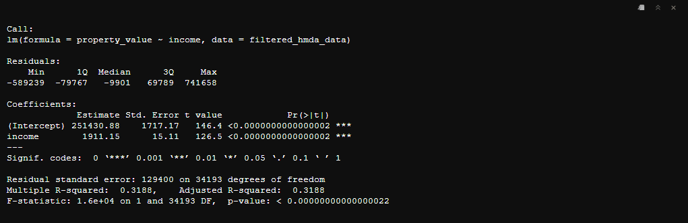
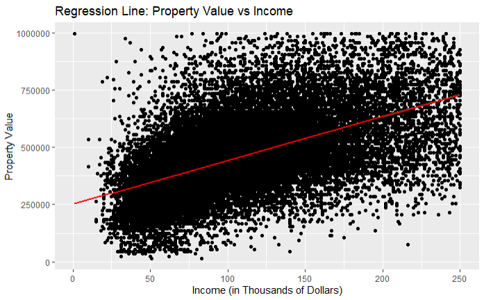
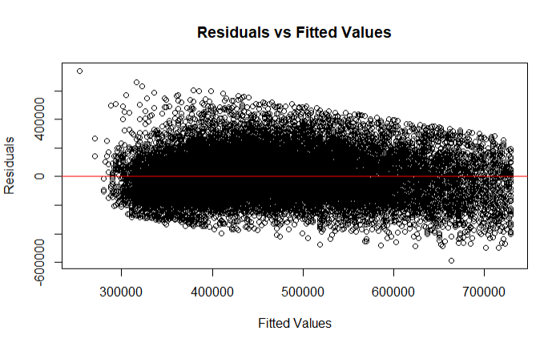
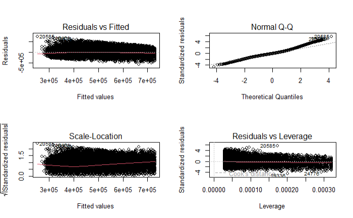

Chapter 5 Basic Regression Analysis in R
5.1 Introduction
Regression analysis is a powerful statistical method used to examine the relationship between a dependent variable and one or more independent variables. In this chapter, we will explore how to perform basic regression analysis in R using the HMDA (Home Mortgage Disclosure Act) dataset. Specifically, we will use the income variable to predict property_value.
5.1.1 Preparing the Data
Before performing regression analysis, it’s crucial to ensure that the data is clean and properly formatted. We’ll start by loading the necessary packages and preparing the HMDA data.
library(ggplot2)
library(dplyr)
library(readr)
# Load HMDA data
hmda_data <- read_csv("downloads/state_NV.csv", guess_max = Inf)
# Filter and prep HMDA data for regression analysis
filtered_hmda_data <- hmda_data %>%
filter(
action_taken == 1,
loan_purpose == 1,
occupancy_type == 1,
lien_status == 1,
total_units == "1",
!property_value %in% c("Exempt", NA),
income <= 250 & income > 0
) %>%
mutate(
property_value = as.numeric(property_value),
loan_type = case_when(
loan_type == 1 ~ "Conventional",
loan_type == 2 ~ "FHA",
loan_type == 3 ~ "VA",
loan_type == 4 ~ "USDA"
)
) %>%
filter(property_value < 1000000)5.2 Simple Linear Regression
Simple linear regression is used to model the relationship between two continuous variables. In this case, we will model the relationship between income (independent variable) and property_value (dependent variable).
5.2.1 Fitting the Model
We use the lm() function to fit a linear model.
# Fit the linear regression model
lm_model <- lm(property_value ~ income, data = filtered_hmda_data)
# Display the summary of the model
summary(lm_model)
5.2.2 Interpreting the Results
Let’s interpret the results of the simple linear regression model using the provided output.
Coefficients
The Coefficients section provides the estimated values of the intercept and slope in the regression equation:
Intercept: 251,430.88
- This represents the estimated property value when
incomeis zero.
- This represents the estimated property value when
Income: 1,911.15
- This represents the estimated change in property value for each unit increase in
income.
- This represents the estimated change in property value for each unit increase in
Statistical Significance
The Pr(>|t|) column provides the p-values for the coefficients:
Intercept: The p-value is less than 0.0000000000000002, indicating that the intercept is statistically significant.
Income: The p-value is also less than 0.0000000000000002, indicating that
incomeis a statistically significant predictor ofproperty_value.
Model Fit
Residual standard error: 129,400 on 34,193 degrees of freedom
- This represents the average distance that the observed values fall from the regression line.
Multiple R-squared: 0.3188
- This indicates that approximately 31.88% of the variance in
property_valuecan be explained byincome.
- This indicates that approximately 31.88% of the variance in
Adjusted R-squared: 0.3187
- This is similar to the R-squared value but adjusted for the number of predictors in the model.
F-statistic: 1.6e+04 on 1 and 34,193 DF, p-value: < 0.00000000000000022
- This indicates that the model is statistically significant overall.
The results suggest that there is a statistically significant positive relationship between income and property_value. For every unit increase in income, the property_value is expected to increase by approximately 1,911.15 units, holding other factors constant. The R-squared value indicates that income explains about 31.88% of the variability in property_value, which suggests that other factors not included in the model may also play a significant role in determining property values.
Visualizing the Regression Line
We can visualize the regression line using ggplot2.
ggplot(data = filtered_hmda_data, aes(x = income, y = property_value)) +
geom_point() +
geom_smooth(method = "lm", col = "red") +
labs(title = "Regression Line: Property Value vs Income",
x = "Income (in Thousands of Dollars)",
y = "Property Value")
In this plot:
geom_point()adds the data points.geom_smooth(method = "lm", col = "red")adds the regression line with the color red.
Plotting Residuals Using lm()
You can plot residuals of a linear model fitted with lm() using several methods in R. One common way is to use base R plotting functions to create diagnostic plots. Here is how you can plot the residuals:
- Basic Residual Plot: Plotting residuals versus fitted values.
# Fit the linear regression model
lm_model <- lm(property_value ~ income, data = filtered_hmda_data)
# Plot residuals vs. fitted values
plot(lm_model$fitted.values, lm_model$residuals,
xlab = "Fitted Values",
ylab = "Residuals",
main = "Residuals vs Fitted Values")
abline(h = 0, col = "red")
- Diagnostic Plots Plotting multiple diagnostic plots at once.
# Fit the linear regression model
lm_model <- lm(property_value ~ income, data = filtered_hmda_data)
# Produce diagnostic plots
par(mfrow = c(2, 2)) # just lets R know we want the plots to be in 2x2 structure
plot(lm_model)
The plot(lm_model) function produces four diagnostic plots:
Residuals vs Fitted
Normal Q-Q
Scale-Location (Spread-Location)
Residuals vs Leverage
These plots help to assess the fit of the model and to identify any potential issues such as non-linearity, heteroscedasticity, and influential observations.